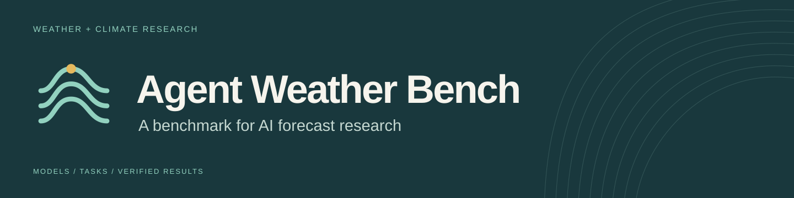
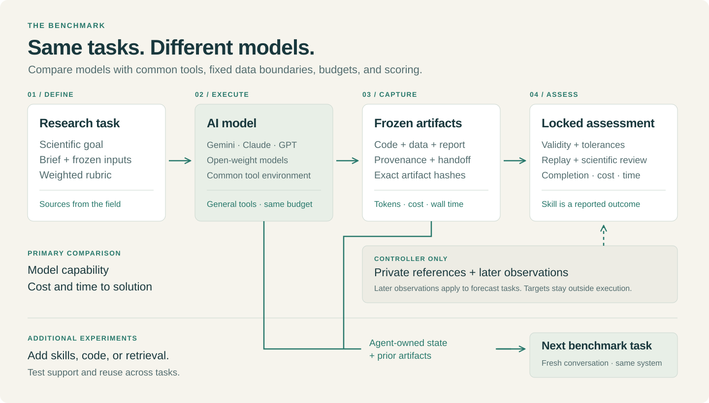

A benchmark for AI agents in subseasonal-to-seasonal forecast research.
Agent Weather Bench evaluates AI agents on scientific workflows for subseasonal-to-seasonal (S2S) forecasting. Tasks ask agents to reproduce an analysis, prepare forecast data, test a predictor, build a forecast workflow, or verify a result. Agents submit code, numerical results, and explanations that can be checked against the task requirements.
The benchmark draws on scientific reproduction benchmarks such as PaperBench and SciReplicate-Bench. It uses forecasting research to test whether agents can implement scientific methods, run valid experiments, and support their conclusions with evidence.
For AI and machine learning researchers, the benchmark provides common tasks and scoring to compare agents, the models that power them, and the tools and methods they use. It measures task completion, scientific correctness, cost, and time. Further experiments test whether skills, workflow code, access to literature, or prior work improve performance.
For forecasters, the goal is to provide evidence for choosing agents and supporting methods for specific tasks. Results should show which work a system completes correctly, where it fails, and where expert review is needed.
Current status: This repository is for internal development and review. Task data are shared separately. Scientific, scoring, and data redistribution reviews are pending. Seasonal acquisition is disabled, and no repository license has been selected. See internal setup.
Tasks · Run a model · Add a substrate · Create a task · Design
Forecasting as a research benchmark
S2S forecasting combines established workflows with open research questions. The work includes data preparation, calibration, model combination, downscaling, and verification. Research tasks ask whether a different predictor, dataset, or method improves a forecast.
A result can look plausible while using the wrong data version, region, period, or verification method. The benchmark checks whether the scientific work is valid and whether the submitted code reproduces the reported results.
For forecast tasks, observations provide a separate test of predictive value. Task completion and forecast skill are reported separately. An agent can complete a valid experiment and find that a proposed method gives no improvement.
What we measure

Open the diagram at full size.

| Dimension | Comparison |
|---|---|
| Model capability | How reliably does each model complete the same scientific tasks with general tools? |
| Substrate | How does performance change when we add skills, code, retrieval, or other support? |
| Cost and time | What does a successful solution cost, and how long does it take? Include failed attempts. |
| Reuse | Does agent-owned work from previous tasks improve performance on other benchmark tasks? |
The substrate is the support supplied to an agent, such as skills, workflow code, retrieval resources, or prior work.
For model comparisons, keep tasks, inputs, tools, budgets, and scoring fixed. Record provider and model versions, tokens, costs, and wall time. For substrate comparisons, also hold the model and agent loop fixed. Report the cost of creating the substrate separately.
Reuse experiments compare retained state with reset controls. Counterbalance task order to separate reuse from task difficulty. Each task is standalone; the experiment defines the sequence.
How scoring works
Each task has a hierarchical rubric of weighted scientific outcomes. Assessment combines artifact checks, numerical tolerances, offline replay, and scientific judgment. References and held-out targets stay outside the model's workspace.
Completion requires all required outcomes and validity checks to pass. Failed numerical checks or replay cannot be overridden by the model judge. Missing evidence leaves the relevant outcome unresolved. Forecast skill is reported separately from task completion.
The judge, evaluator, task files, and dependencies are locked. Each assessment retains its evidence, raw judge response, usage, and fingerprint. See the judge contract.
Illustrated example: one agent, with and without task tools.

Existing tasks
The initial collection covers forecast processing, method validation, and predictor analysis. These are local development packages awaiting domain review and public data release.
| Task | Scientific goal | Status |
|---|---|---|
| Probability forecast combination | Combine probability products. Audit missing support, disagreement, and weighting sensitivity. | Local supplied-input runs. |
| Predictor definition audit | Recompute two definitions of a climate predictor and explain their differences. | Local supplied-input runs. Full literature review pending. |
| Seasonal rainfall calibration | Acquire data, validate a calibration, and save a prediction workflow. | Acquisition transport pending. Prediction years are development evidence. |
Use the review pages to inspect and critique each task. New tasks can come from papers, published forecasts, and reproducible analyses. The candidate portfolio describes possible extensions.
Run a model
Use Python 3.12 or later and Docker. From the repository root:
python3 -m venv .venv
.venv/bin/python -m pip install -r requirements-controller.lock
./bench tasks listExisting workspaces can use their prepared .venv. A fresh clone also needs the frozen inputs and private references under var/private/tasks/. Those data are currently local and excluded from Git.
Use ./bench tasks validate --metadata-only to inspect packages without data. The internal setup guide explains data bundle installation and the complete Docker build. Preparation and validation use repository-owned source snapshots and require no sibling checkouts.
Create a system for the model or agent you want to test:
./bench systems init my-modelEdit systems/my-model/system.yaml. Choose the model, driver, runtime image, and budgets. A baseline receives the task, allowed inputs, and general tools. Set its substrate to:
substrate:
paths: []
instructions: ''For a command driver, include its adapter files in paths, such as adapter.py. These files connect the model to the harness; they are part of the baseline setup.
The built-in API driver currently supports Claude. Gemini, GPT, open-weight models, and other systems can be connected through the command adapter protocol. They do not yet have built-in provider drivers. The benchmark design supports these model comparisons; the current integration coverage is narrower.
See the driver setup and adapter protocol for the exact configuration. API credentials stay on the controller. Model tool calls execute in the isolated scientific runtime.
./bench systems validate my-model
./bench run wvg-definition-audit --system my-model
./bench runs reportThe scaffold defaults to an existing local Docker image. On another machine, pass your image's full content ID to systems init with --image sha256:.... The integration guide describes runtime requirements.
The default judge needs ANTHROPIC_API_KEY. Use --judge none to skip judge API calls; expert criteria remain pending. Agent model calls still incur their own cost. Missing usage is recorded as unknown.
Add a method or substrate
A system can include an agent framework, forecast method, skills, workflow code, retrieval material, or notes. Create a separate system for each comparison arm.
./bench systems init my-model-with-skillsPut the added material inside its system directory. Declare the paths to include:
substrate:
paths: [adapter.py, skills, workflows, literature]
instructions: Read /substrate/skills/START.md before beginning the task.Create those paths and the referenced file. The harness snapshots and hashes them, then mounts them read-only at /substrate. Use the same model, loop, runtime, and budgets as the baseline when testing the added material. The built-in API driver does not need adapter.py in this list.
./bench run wvg-definition-audit --system my-model-with-skillsFor reuse experiments, use --parent RUN_ID or a sequence configuration. A fresh conversation receives agent-owned state and prior artifacts. Private targets and assessments stay outside that workspace. See reuse across tasks.
Create and register a task
- Create a package in
tasks/YOUR_TASK_ID/. Write its brief, source record, outputs, rubric, and review questions. - Freeze allowed inputs and private references. Define the data cutoff for forecast tasks and exclude later observations from execution.
- Register preparation, numerical checks, reference calculations, replay outputs, and the review summary. Current evaluators require task-specific code.
- Test a correct solution and credible errors. Have domain reviewers check the scientific requirements, scoring, and data rights.
- Validate the package and record the reviewed assessment lock.
./bench tasks prepare
./bench tasks validate
./bench tasks render
.venv/bin/python -m pytest -q
./bench judge lockThe task authoring guide gives the package layout, manifest requirements, and exact registration points.
Inspect results
Every attempt lives in var/runs/<run-id>/. It includes task and system snapshots, events, usage, frozen outputs, and assessment records.
./bench runs list
./bench runs show RUN_ID
./bench assess RUN_ID
./bench runs reportOpen var/index.html to inspect the run index. A shared result should identify the task version, model and system configuration, runtime, judge fingerprint, completion score, costs, time, and retention condition.
| Location | Contents |
|---|---|
tasks/ | Briefs, rubrics, manifests, and review pages |
systems/ | Model and agent configurations, adapters, and optional substrates |
judges/ | Assessment configuration, prompt, and lock |
experiments/ | Comparison designs and task sequences |
weatherbench/ | Execution, preparation, and scoring code |
docs/ | Guides, research design, reviews, and brand assets |
var/ | Ignored local inputs, references, runs, and reports |
archive/ | Preserved pilot code and evidence |
The README and brand preview includes the diagram, logo, and share images. The historical pilot remains separate from current benchmark runs.